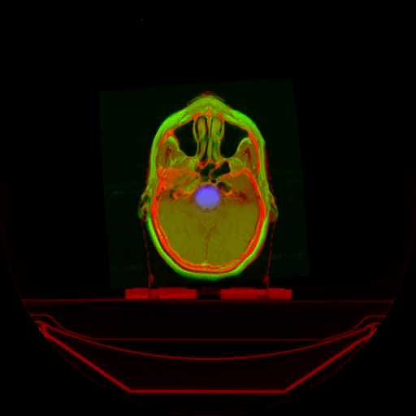
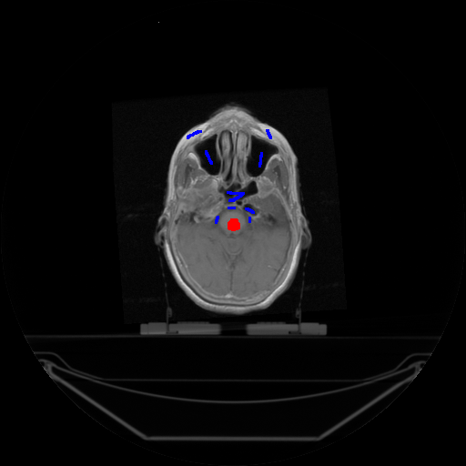

This is an implementation of the SAASS algorithm in native Python code
The SAASS implementation of Graph Cut propagates the classifications of various bodily regions through all of the 2D slices within the 3D medical image
The user of SAASS will be required to traverse through the various slices of the 3D image in order to verify that each has been correctly regimented
If the segmentation is incorrect, the user can retrain the graph cut algorithm by inputting new brush strokes to reinforce regional distinctions.
Requirements: numpy dicom
Contents:
Here is an example of SAASS in action:
Given the brainscan:
One applys brushes to indicate the different regions:
And one a segmentation is produced:
References:
SAASS
Hua,Mageras Grossberg, et al (2012) Interactive semiautomatic contour delineation using statistical conditional random fields framework
Hu, Grossberg, Magerals (2008) Semi-Automatic Medical Image Segmentation with Adaptive Local Statistics in Conditional Random Fields Framework
Graph Cut
Cormen, Rivest, et al Algorithms – chapter on Graph Cuts/Ford-Fulkerson.
Toby Collins (2004) Graph Cut Matching In Computer Vision
Vladimir Kolmogorov, and Ramin Zabih, (2004) What Energy Functions Can Be Minimized via Graph Cuts? IEEE TRANSACTIONS ON PATTERN ANALYSIS AND MACHINE INTELLIGENCE, VOL. 26, NO. 2.
D Greig, B. Porteous, and A. Seheult. (1989) Exact maximum a posteriori estimation for binary images. Journal of Royal Statistical Society, Series B, vol. 51, no. 2, pp. 271-279.
Boykov and Funka-Lea Graph Cuts and Efficient N-D Image Segmentation (2006) . International Journal of Computer Vision 70, 109–131.
Boykov and Jolly Interactive Graph Cuts for Optimal Boundary & Region Segmentation of Objects in N-D Images (2001). Proceedings of “Internation Conference on Computer Vision”, Vancouver, Canada.
Yuri Boykov and Vladimir Kolmogorov (2004) An Experimental Comparison of Min-Cut/Max-Flow Algorithms for Energy Minimization in Vision In IEEE Transactions on PAMI, Vol. 26, No. 9, pp. 1124-1137.
Conditional Random Fields
John Lafferty, Andrew McCallum, Fernando Pereira (2001). Conditional Random Fields: Probabilistic Models for Segmenting and Labeling Sequence Data. In International Conference on Machine Learning.
Roman Klinger, Katrin Tomanek (2007) Classical Probabilistic Models and Conditional Random Fields. (Algorithm Engineering Report TR07-2-013)
Charles Sutton and Andrew McCallum (2005). An Introduction to Conditional Random Fields for Relational Learning
Hanna M. Wallach (2004) Conditional Random Fields: An Introduction (University of Pennsylvania CIS Technical Report MS-CIS-04-21)
Statistics
Duda, et al. Pattern Recognition
In particular, Ch 1 (introduction); Ch 2(Bayesian Decision Theory); Ch 3 (Mximum Likelihood and Bayesian Parameter Estimation); Ch 4 (Nonparametric Techniques)
Probabilistic Graphical Models: Stanford Online course
Particulary these videos:
0103 Distributions - Probabilistic Graphical Models - Pro
0104 - Factors - Probabilistic Graphical Models - Professor
0203 - Flow of Probabilistic Influence - Probabilistic Grap
0204 - Conditional Independence - Probabilistic Graphical M
0205 - Independencies in Bayesian Networks - Probabilistic
0206 - Naive Bayes - Probabilistic Graphical Models - Profe
0301 - Overview of Template Models - Probabilistic Graphica
0302 - Temporal Models - Probabilistic Graphical Models - P
0303 - Temporal Models - HMMs - Probabilistic Graphical Mod
0601 - Pairwise Markov Networks- Probabilistic Graphical Mo
0602 - General Gibbs Distribution- Probabilistic Graphical
0603 - Conditional Random Fields- Probabilistic Graphical M
0801-Overview_Conditional Probability Queries-Probabilistic G
0802 - Overview MAP Inference- Probabilistic Graphical Mod
1102 - Finding a MAP Assignment- Probabilistic Graphical M
1201 - Tractable MAP Problem-Probabilistic Graphical Model
1801 Maximum Likelihood Estimation-Probabilistic Graphical M
1802-Maximum Likelihood Estimation for Bayesian Networks-Pro
1803 Bayesian Estimation -Probabilistic Graphical Models-Pro
1902-Maximum Likelihood for Conditional Random Fields-Probab
1903 MAP Estimation for MRFs and CRFs-Probabilistic Graphica
Source: University of Heidelberg
Link http://www.youtube.com/watch?v=NOXTvnCGhRM
8.4 Max-Flow _ Min-Cut _ Image Analysis Class 2013.mp4
8.5 Graph Cuts _ Image Analysis Class 2013.mp4
9.1 Kernel Density Estimation _ 9 Unsupervised Learning _ Pa
From Universities in China and India:
Fast Approximate Energy Minimization via Graph Cut
Introduction to Graph Cut
Mod-05 Lec-31 Network flows Max flow mincut theorem
From Some Polisci Professor
Link http://www.youtube.com/watch?v=30yDDzLGviM
POLS 506 Bayesian and Nonparametric Stat. - Lecture 7 - Kernel Estimation
From Mathematical Monk
Link http://www.youtube.com/user/mathematicalmonk
(ML 11.1) Estimators
(ML 11.2) Decision theory terminology in different contexts
(ML 14.1) Markov models - motivating examples
(ML 14.2) Markov chains (discrete-time) (part 1)
(ML 14.3) Markov chains (discrete-time) (part 2)
(ML 14.4) Hidden Markov models (HMMs) (part 1)
(ML 14.5) Hidden Markov models (HMMs) (part 2)
(ML 4.1) Maximum Likelihood Estimation (MLE) (part 1)
(ML 4.2) Maximum Likelihood Estimation (MLE) (part 2)
(ML 6.1) Maximum a posteriori (MAP) estimation
(ML 6.2) MAP for univariate Gaussian mean